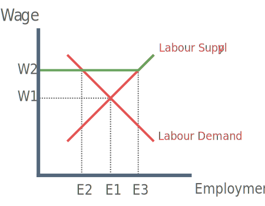

What is a Trade Union?
A trade union is an organised association of workers in a trade, group of trades or profession, formed to protect and further their rights and interests.
Examples Of Trade Unions
Musicians' Union
National Union of Mineworkers
Bakers, Food and Allied Workers Union
Effect of a Trade union on wages and employment
For analysis it is common to assume a 'closed shop’:
Every worker in an occupation has to be in union
Union density is said to be 100%

Labour supply curve is perfectly elastic at the wage demanded by the union (W2).
Beyond the kink, higher wages are necessary to elicit further extension of supply.
As a result, the wage is higher than it would have been in competitive labour market (W1).
And the higher wage causes a contraction of labour demand and an extension of labour supply. This causes excess supply of labour. (Unemployment E2-E3).
The extent of unemployment depends on elasticity of labour demand.